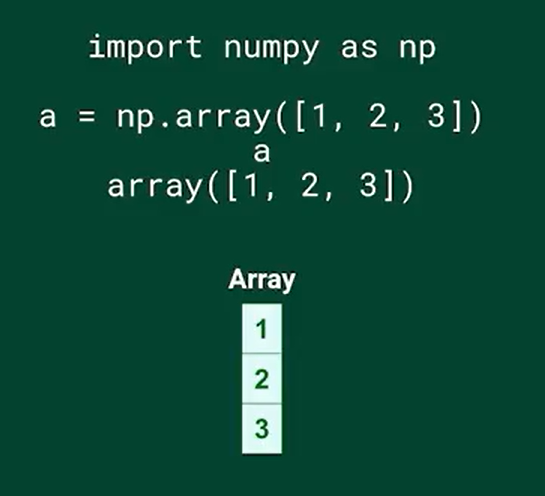

Numpy#
AKA Numeric Python
Numpy advantages:
optimized storage in memory
50 times faster than a python list
allows mathematical operators that don´t work with lists
Numpy data Types#
A numpy array can hold just one data type at the same time, even tough it still support the following data types:
If you want to see the data type that is holding your array, use the dtype method
import numpy as np
arr = np.array([1,2,3,4,5])
print(arr.dtype)
int32
change the data type of an array#
we might want to transform these data types into float
note that the numbers are originally int64, let´s turn them into float64
this is convenient if you are working with tensorflow, pytorch and Neural Networks. code will run faster
import numpy as np
arr2 = np.array([1,2,3,4,5], dtype = "float64")
print(arr2.dtype)
print(arr2)
float64
[1. 2. 3. 4. 5.]
another way to redefine the data type given an array
this will turn data into float64
note: to turn data into float64 use the method:
array_name.astpye(np.float64)
#import numpy as np
#creating the array
arr3 = np.array([1,2,3,4,5])
#changing the array data type
arr3 = arr3.astype(np.float64)
#now print the array and its data type
print(arr3)
print(arr3.dtype)
[1. 2. 3. 4. 5.]
float64
to turn data into boolean use the method:
array_name.astype(np.bool_)
#import numpy as np
#creating the array
arr4 = np.array([0,1,2,3,4,5])
#changing the array data type
arr4 = arr4.astype(np.bool_)
#now print the array and its data type
print(arr4)
print(arr4.dtype)
print("note that the only false value is that one corresponding to 0")
[False True True True True True]
bool
note that the only false value is that one corresponding to 0
to turn data into string use the method:
array_name.astype(np.string_)
#import numpy as np
#creating the array
arr5 = np.array([0,1,2,3,4,5])
#changing the array data type
arr5 = arr5.astype(np.string_)
#now print the array and its data type
print(arr5)
print(arr5.dtype)
[b'0' b'1' b'2' b'3' b'4' b'5']
|S11
can we do the opposite?
from string to integer
btw use the method: array_name.astype(np.int8)
#import numpy as np
#creating the array of strings
arr6 = np.array(["0","1","2","3","4","5"])
#changing the array data type
arr6 = arr6.astype(np.int8)
#now print the array and its data type
print(arr6)
print(arr6.dtype)
[0 1 2 3 4 5]
int8
note that the strings CANNOT have letters, just numbers, otherwise it will shoot an error
Numpy data type & definition#
In numpy, the main data type is an array. The arrays are defined as follows:
a = np.array([1, 2, 3])
arrays are built from python lists

Operators & indexing#
Mathematical operators in numpy#
suppose you have a list and you want to calculated each element to the power of two
x = [1, 2, 3, 4, 5]
print(x)
[1, 2, 3, 4, 5]
if you try x**2 it will shoot you an error, i promise.
To solve these problems, you can use Numpy arrays
# first step
import numpy as np
# this is how you transform a list into an array
x = np.array(x)
#now we use the ** operator on the array without getting an error
print(type(x))
print(x**2)
<class 'numpy.ndarray'>
[ 1 4 9 16 25]
Numpy arrays can only contain one data type!!!!!!!!!!!!!!!!
#import numpy as np
a = np.array([1, "is", True])
print(type(a))
print(type(a[0])) #first element
print("note that everything will be turned into a string")
print(type(a[2])) #third element
<class 'numpy.ndarray'>
<class 'numpy.str_'>
note that everything will be turned into a string
<class 'numpy.str_'>
Performable operations with Numpy Arrays#
#import numpy as np
firstlist = [1, 2, 3]
numpylist = np.array(firstlist)
print(firstlist + firstlist)
print(numpylist + numpylist)
[1, 2, 3, 1, 2, 3]
[2 4 6]
Note that the list is doing an append, while the array is summing the arrays element by element (and that makes more sense)
Numpy Indexing#
In Numpy, you can index as in a list.
Structure
Array[conditions]
example:
#import numpy as np
#creating a 1D array
crazylist = [1,2,3,4,5,6,7,8,9,10,11,12]
crazyarray = np.array(crazylist)
#let´s print the first element of the array
print(crazyarray[0])
#let´s slice from the 2nd to the 5th elements
print(crazyarray[1:6])
#slice from second object to the last
print(crazyarray[1:])
#slice from the beginning until the sixth element
print(crazyarray[:7])
1
[2 3 4 5 6]
[ 2 3 4 5 6 7 8 9 10 11 12]
[1 2 3 4 5 6 7]
If put a condition to an array, you will create an array of booleans (booleans will be true if condition is met)
example:
crazyarray < 3 will create a booleans array in which the numbers that are less than 3 will be true
#import numpy as np
crazylist = [1,2,3,4,5,6,7,8,9,10,11,12]
crazyarray = np.array(crazylist)
#let´s print an array of conditions
conditionals = crazyarray<3
print(conditionals)
[ True True False False False False False False False False False False]
Subset with conditions#
And finally, if you subset that list of booleans, you can get the actual elements from the array that meet the condition.
import numpy as np
crazylist = [1,2,3,4,5,6,7,8,9,10,11,12]
crazyarray = np.array(crazylist)
#let´s say that i want to print all the numbers less than 6
#this is the condition
crazyarray < 6
#this is the actual array that i want to print (subset the condition)
print(crazyarray[crazyarray < 6])
#if we want to set multiple conditions
print(crazyarray[(crazyarray>3) & (crazyarray<7)])
[1 2 3 4 5]
[4 5 6]
a third argument inside the indexing box, would indicate the number of steps:
#import numpy as np
crazylist = [1,2,3,4,5,6,7,8,9,10,11,12]
crazyarray = np.array(crazylist)
#three steps sequence
print(crazyarray[::3])
[ 1 4 7 10]
2D Numpy arrays (just arrays with rows and columns)#
Let´s create a numpy array from two lists, the lists have n objects. Then the array will have two rows and n columns.
The Structure to create a 2D np.array is:
np.array( [ [row_1] , [row_2], [row_3], [row_n] ] ).
creating a 2D array#
example: create an array of 3 rows and 3 columns with numbers from 1 to 9
my_array = np.array( [ [1,2,3] , [4,5,6] , [7,8,9] ] )
print(my_array)
#now print the number of rows and columns
print("this array has the following amount of rows and columns respectively:")
print(my_array.shape)
[[1 2 3]
[4 5 6]
[7 8 9]]
this array has the following amount of rows and columns respectively:
(3, 3)
another example:
import numpy as np
np_height = [1.73, 1.68, 1.71, 1.89, 1.79]
np_weight = [65.4, 59.2, 63.6, 88.4, 68.7]
#this is the 2D array
np_bigarray = np.array([np_height, np_weight])
print(np_bigarray)
print("rows and columns respectively are:")
print(np_bigarray.shape)
[[ 1.73 1.68 1.71 1.89 1.79]
[65.4 59.2 63.6 88.4 68.7 ]]
rows and columns respectively are:
(2, 5)
how to subset in a 2D array#
structure:
arrayname[rowindex, colindex]
or
arrayname[rowindex][colindex]
example:
#import numpy as np
np_height = [1.73, 1.68, 1.71, 1.89, 1.79]
np_weight = [65.4, 59.2, 63.6, 88.4, 68.7]
np_bigarray = np.array([np_height, np_weight])
b = np_bigarray[0,0] #note that this will be element located in first row and first col
alsob = np_bigarray[0][0] #same thing but with another structure
print(b)
print(alsob)
1.73
1.73
row-col subsetting#
Now your mission is print the element from row 2 and col 3.
remember that the array is:
[ [1.73, 1.68, 1.71, 1.89, 1.79], [65.4, 59.2, 63.6, 88.4, 68.7] ]
#import numpy as np
np_height = [1.73, 1.68, 1.71, 1.89, 1.79]
np_weight = [65.4, 59.2, 63.6, 88.4, 68.7]
np_bigarray = np.array([np_height, np_weight])
element = np_bigarray[1,2] #note that this will be element located in row 2 and col 3
print(element)
if element == 63.6:
print("Good job")
else:
print("F bro")
63.6
Good job
full row subsetting#
Let´s subset a full row:
array: [ [1.73, 1.68, 1.71, 1.89, 1.79], [65.4, 59.2, 63.6, 88.4, 68.7] ]
#import numpy as np
np_height = [1.73, 1.68, 1.71, 1.89, 1.79]
np_weight = [65.4, 59.2, 63.6, 88.4, 68.7]
np_bigarray = np.array([np_height, np_weight])
#first row
print(np_bigarray[0])
[1.73 1.68 1.71 1.89 1.79]
full column subsetting#
structure[ : , columnindex]
note that “:” means take all rows, then columnindex is just the index of the column that you wish
#import numpy as np
np_height = [1.73, 1.68, 1.71, 1.89, 1.79]
np_weight = [65.4, 59.2, 63.6, 88.4, 68.7]
np_bigarray = np.array([np_height, np_weight])
#first column
print(np_bigarray[ : , 0])
#third and fourth column
print(np_bigarray[ : , 2:4])
# 2:4 means:
#"take from column index 2 (which is actual column 3) to column index 3 (which is actual column 4)"
#btw the column index 4 is not included
[ 1.73 65.4 ]
[[ 1.71 1.89]
[63.6 88.4 ]]
Numpy statistical functions#
np.mean(array) #this can tell you the mean of your data np.median(array) #this can tell you the median of your data np.corrcoef(array[col1], [col2]) #this can tell you if col1 and col2 are correlated np.std(array) #standart deviation np.var(array) #variance
array = np.array([
[1.64, 71.78],
[1.37, 63.35],
[1.6 , 55.09],
[2.04, 74.85],
[2.04, 68.72],
[2.01, 73.57]
])
#calculate mean from first column
print("mean:")
print(np.mean(array[:, 0]))
#calculate median from first column
print("median:")
print(np.median(array[:, 0]))
#calculate correlation between first and second col
print("correlation:")
print(np.corrcoef(array[:, 0], array[:, 1] ))
#calculate stdev from first column
print("stdev:")
print(np.std(array[:, 0]))
mean:
1.7833333333333332
median:
1.8249999999999997
correlation:
[[1. 0.64924262]
[0.64924262 1. ]]
stdev:
0.2608107018935807
Copy an array (BE CAREFUL)#
supose we have an array of the numbers from 1 to 10
my_array = np.arange(0, 11)
print(my_array)
[ 0 1 2 3 4 5 6 7 8 9 10]
and suddenly we just want to work with the first 5 elements
sub_array = my_array[0:6]
print(sub_array)
[0 1 2 3 4 5]
ok, now i would like to modify the elements of sub_array
sub_array[:] = 0
print(sub_array)
[0 0 0 0 0 0]
nice! now, i just made the changes in my sub array
was my original array modified as well?
let’s see
print(my_array)
[ 0 0 0 0 0 0 6 7 8 9 10]
This is not what we want!!!!! the original array was modified!!!!
This can seriously damage your dataset
the solution is
.copy()
my_array_copy = my_array.copy()
print("before transformation:")
print("my_array", my_array)
print("my_array_copy", my_array_copy)
#let's transform my_array
my_array[:] = 0
print("after transformation:")
print("my_array", my_array)
print("my_array_copy", my_array_copy)
before transformation:
my_array [ 0 0 0 0 0 0 6 7 8 9 10]
my_array_copy [ 0 0 0 0 0 0 6 7 8 9 10]
after transformation:
my_array [0 0 0 0 0 0 0 0 0 0 0]
my_array_copy [ 0 0 0 0 0 0 6 7 8 9 10]
Numpy Useful Methods#
Generate data with a normal distribution#
you can generate data with a normal distribution with np.random.normal()
structure: np.random.normal (mean, sd, sample_size)
import numpy as np
#let´s create an array of height with mean 1.75 and sd = 0.20 for 5000 people
height = np.random.normal(1.75, 0.20, 5000)
print(height)
[1.83487471 1.59298401 1.97363294 ... 1.82536185 1.07024984 1.82003362]
Generate a random number between 0 and 1#
#with np.random.rand() you generate a random number between 0 and 1
import numpy as np
print(np.random.rand())
#if you add an argument n, it will generate an array containing n random numbers between 0 and 1
print( np.random.rand(5) )
#if you add two arguments m,n. It will generate an array of random numbers between 0 & 1 and
#m columns x n rows
print( np.random.rand(5,7) )
0.7217664441405948
[0.41969204 0.51746925 0.47584953 0.28610208 0.76432213]
[[0.18397203 0.738653 0.83709204 0.49924172 0.34224397 0.42791657
0.92612386]
[0.08081806 0.1280082 0.19119259 0.25129989 0.58912103 0.92936342
0.97576107]
[0.91017151 0.35406689 0.7114037 0.84794622 0.9467253 0.00920893
0.72588155]
[0.3991321 0.12905765 0.4995936 0.50861837 0.70815928 0.97624481
0.82421081]
[0.33757498 0.33519419 0.05755154 0.72333293 0.53912569 0.55919818
0.54597557]]
Generate a random number between a and b#
import numpy as np
#random between a & b
print( np.random.randint(1,20) )
#1 = a & 20 = b
#random ARRAY between a & b
print( np.random.randint(1,20, (5,5)) )
#the last tuple (5,5) just indicates the dimensions of the array
6
[[17 3 10 5 19]
[14 5 4 16 1]
[12 19 1 2 14]
[ 1 7 11 17 10]
[10 3 17 1 18]]
Concatenate arrays#
import numpy as np
a = np.array([[1,2], [3,4]])
b = np.array([5,6])
b = np.expand_dims(b, axis=0)
c = np.concatenate( (a, b), axis=0 )
print(a)
print(b)
print(c)
[[1 2]
[3 4]]
[[5 6]]
[[1 2]
[3 4]
[5 6]]
merge two arrays into a 2D array#
import numpy as np
#let´s create an array of height with mean 1.75 and sd = 0.20 for 5000 people
height = np.random.normal(1.75, 0.20, 5000)
#let´s create an array of weight with mean 60.32 and sd = 15 for 5000 people
weight = np.random.normal(60.32, 15, 5000)
np_city = np.column_stack((height, weight))
print(np_city)
[[ 1.64934121 55.92081081]
[ 1.65947285 89.04802018]
[ 1.82978068 74.56895188]
...
[ 1.69891834 59.34915382]
[ 1.64297808 46.20537603]
[ 1.72259225 58.23620619]]
Generate an array given an interval#
the method np.arange is used to create an array given a numeric interval.
Structure:
np.arange(leftlimit, rightlimit, steps)
#Let´s create an array from 0 to 100
import numpy as np
a = np.arange(0, 101)
print(a)
#now let´s create an array from 0 to 100 every 2 steps
b = np.arange(0, 101, 2)
print(b)
[ 0 1 2 3 4 5 6 7 8 9 10 11 12 13 14 15 16 17
18 19 20 21 22 23 24 25 26 27 28 29 30 31 32 33 34 35
36 37 38 39 40 41 42 43 44 45 46 47 48 49 50 51 52 53
54 55 56 57 58 59 60 61 62 63 64 65 66 67 68 69 70 71
72 73 74 75 76 77 78 79 80 81 82 83 84 85 86 87 88 89
90 91 92 93 94 95 96 97 98 99 100]
[ 0 2 4 6 8 10 12 14 16 18 20 22 24 26 28 30 32 34
36 38 40 42 44 46 48 50 52 54 56 58 60 62 64 66 68 70
72 74 76 78 80 82 84 86 88 90 92 94 96 98 100]
Create useful arrays#
import numpy as np
#this is a zero matrix
zerosmatrix = np.zeros((10, 10)) #the arguments are the dimensions, 10 rows & 10 cols
print(zerosmatrix)
#this is a ones matrix
onesmatrix = np.ones((10, 10)) #the arguments are the dimensions, 10 rows & 10 cols
print(onesmatrix)
#and now let´s get an equally distributed matrix
eqdistmat = np.linspace(0, 11, 6) #arguments mean (from cero, to 11, 6 numbers)
print(eqdistmat)
#you can also create the idenity matrix
identitymatrix = np.eye(3) #the identity matrix will be 3x3 in this case
print(identitymatrix)
[[0. 0. 0. 0. 0. 0. 0. 0. 0. 0.]
[0. 0. 0. 0. 0. 0. 0. 0. 0. 0.]
[0. 0. 0. 0. 0. 0. 0. 0. 0. 0.]
[0. 0. 0. 0. 0. 0. 0. 0. 0. 0.]
[0. 0. 0. 0. 0. 0. 0. 0. 0. 0.]
[0. 0. 0. 0. 0. 0. 0. 0. 0. 0.]
[0. 0. 0. 0. 0. 0. 0. 0. 0. 0.]
[0. 0. 0. 0. 0. 0. 0. 0. 0. 0.]
[0. 0. 0. 0. 0. 0. 0. 0. 0. 0.]
[0. 0. 0. 0. 0. 0. 0. 0. 0. 0.]]
[[1. 1. 1. 1. 1. 1. 1. 1. 1. 1.]
[1. 1. 1. 1. 1. 1. 1. 1. 1. 1.]
[1. 1. 1. 1. 1. 1. 1. 1. 1. 1.]
[1. 1. 1. 1. 1. 1. 1. 1. 1. 1.]
[1. 1. 1. 1. 1. 1. 1. 1. 1. 1.]
[1. 1. 1. 1. 1. 1. 1. 1. 1. 1.]
[1. 1. 1. 1. 1. 1. 1. 1. 1. 1.]
[1. 1. 1. 1. 1. 1. 1. 1. 1. 1.]
[1. 1. 1. 1. 1. 1. 1. 1. 1. 1.]
[1. 1. 1. 1. 1. 1. 1. 1. 1. 1.]]
[ 0. 2.2 4.4 6.6 8.8 11. ]
[[1. 0. 0.]
[0. 1. 0.]
[0. 0. 1.]]
Know the array dimensions#
# you can use the np.shape() method to know the dimensions of the array.
import numpy as np
#let´s create a 1D array
firstarray = np.array([1,2,3,4,5])
print(firstarray.shape)
# notice that this has 5 columns and 1 row
#now let´s do a 2D array
secondarray = np.array(
[
[1, 2, 3, 4],
[5, 6, 7, 8],
[9, 10, 11, 12]
]
)
print(secondarray.shape)
#note that this array is 3 rows & 4 cols
(5,)
(3, 4)
Reshape an array#
import numpy as np
# let´s modify the dimensions of an array
originalarray = np.array(
[
[1,2],
[3,4],
[5,6]
]
)
print(originalarray)
#let´s reshape to 1 row and 6 col
firstmodarray = originalarray.reshape(1,6)
print(firstmodarray)
#let´s reshape to 2 rows and 3 cols
secmodarray = np.reshape(originalarray,(2,3), "C")
#IMPORTANT: third argument indicates "organize as the C language does"
#C is the base of python
print(secmodarray)
#let´s reshape to 2 rows and 3 cols
thirdmodarray = np.reshape(originalarray,(2,3), "F")
#IMPORTANT: third argument indicates "organize as the Fortran language does"
print(thirdmodarray)
#let´s reshape to 2 rows and 3 cols
thirdmodarray = np.reshape(originalarray,(2,3), "A")
#IMPORTANT: third argument indicates "organize as the language with the most optimum storage"
#in my device
print(thirdmodarray)
[[1 2]
[3 4]
[5 6]]
[[1 2 3 4 5 6]]
[[1 2 3]
[4 5 6]]
[[1 5 4]
[3 2 6]]
[[1 2 3]
[4 5 6]]
Numpy main functions#
.max() .min() .argmax() & .argmin()#
import numpy as np
#let's create an array
arr = np.random.randint(1, 20, 10)
print("array:")
print(arr)
#let's create a matrix
matrixx = arr.reshape(2, 5)
print("matrix:")
print(matrixx)
#.max(): in an array, returns the largest number in our array
print("array maximum element:")
print(arr.max())
#.max(): in a matrix, returns the largest number in the given the dimension
print(".max() column level:")
print(matrixx.max(0))
print(".max() row level:")
print(matrixx.max(1))
#.argmax(): returns the index that contains the largest number given the dimension
print(".argmax() column level:")
print(matrixx.argmax(0))
print(".argmax() row level:")
print(matrixx.argmax(1))
array:
[19 8 17 8 16 9 4 18 12 13]
matrix:
[[19 8 17 8 16]
[ 9 4 18 12 13]]
array maximum element:
19
.max() column level:
[19 8 18 12 16]
.max() row level:
[19 18]
.argmax() column level:
[0 0 1 1 0]
.argmax() row level:
[0 2]
.ptp()#
import numpy as np
#let's create an array
arr = np.random.randint(1, 20, 10)
print("array:")
print(arr)
#let's create a matrix
matrixx = arr.reshape(2, 5)
print("matrix:")
print(matrixx)
#ptp():tells you what is the peak to peak distance (meaning maxvalue - minvalue)
print("given the array", arr, ", the .ptp() method returns:" )
print(arr.ptp())
print("which equals", arr.max(), "-", arr.min())
#in a matrix
#column level
print(".ptp() in column level:")
print(matrixx.ptp(0))
#row level
print(".ptp() in row level:")
print(matrixx.ptp(1))
array:
[15 13 1 7 3 10 13 15 2 9]
matrix:
[[15 13 1 7 3]
[10 13 15 2 9]]
given the array [15 13 1 7 3 10 13 15 2 9] , the .ptp() method returns:
14
which equals 15 - 1
.ptp() in column level:
[ 5 0 14 5 6]
.ptp() in row level:
[14 13]
.percentile()#
import numpy as np
#let's create an array
arr = np.random.randint(1, 20, 10)
print("array:")
print(arr)
#let's create a matrix
matrixx = arr.reshape(2, 5)
print("matrix:")
print(matrixx)
#percentile zero
print(np.percentile(arr, 0))
#percentile fifty
print(np.percentile(arr, 50))
#percentile 100
print(np.percentile(arr, 100))
array:
[14 9 1 7 5 8 6 9 9 7]
matrix:
[[14 9 1 7 5]
[ 8 6 9 9 7]]
1.0
7.5
14.0
![Created in deepnote.com]() Created in Deepnote
Created in Deepnote